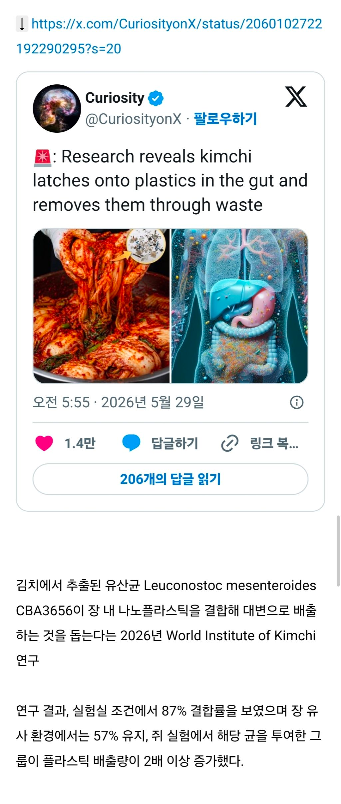
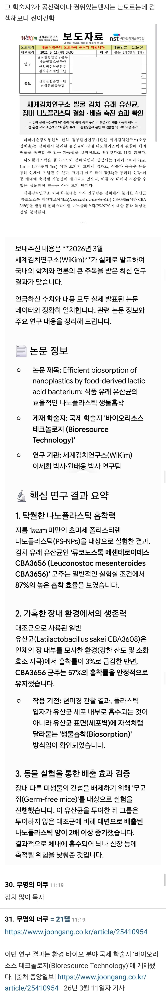

https://cafe.daum.net/subdued20club/ReHf/5776098?svc=cafeapi


겉절이는 안됨
https://cafe.daum.net/subdued20club/ReHf/5776098?svc=cafeapi


겉절이는 안됨
김치 네녀석....!
이제 그럼 플라스틱도 먹어도 돼?
안 됨. 미세플라스틱은 장 뿐만 아니라 몸 전체에 안 퍼지는 곳이 없음. 뇌 심장 간 위 폐 고환 자궁 다 존재. 간이랑 장에서 특히 많이 모이는 곳이 장이긴 한데 여기서 처리가 100% 안 되면 소량이라도 혈액 타고 여기저기 퍼짐. 물론 그거 가지고 몸에서 문제가 생기려면 엄청난 기간에 걸쳐 쌓이고 쌓여야 하지만 대부분은 문제가 일어나진 않을거임. 규칙적으로 몸 움직이고 식습관 좋게 유지하고 좋은 음식 먹고 나쁜거 피하면 축적량은 의미없는 수준으로 줄이면서 본문처럼 장 내에서 배출하는 양이 더 많아져서 평생 안심해도 됨. 미세플스틱 먹어도 되냐는 말은 조금 이상하고 미세플라스틱으로 인한 질병 걱정 없이 살 수 있다고 하면 괜찮은 표현일듯
그럼 김치탕을 만들어서 몸을 푹 담그는걸로...
플라스틱 개같이 퍼먹어도 된다는거구나 고마워
지지야 지지!
우리 개붕이 먹어도 돼 대신 김치에 싸먹어야한다
이왜진... 역시 김치워리어 밖에 없는거냐고..ㅋㅋㅋ
김치는 완벽한 음식이다
김치워리어 오늘도 1승
킹치 오늘도 1승 추가
김장을 유지해야할 이유가 있었네
어캐했노 ㄷㄷ
얇은 생수통에서 미세 프라스틱 엄청 나온다던데 특히 얼려서 깨먹으면
내 공룡 유전자가
아 칼국수에는 겉절이가 좋은데
아니 이게 진짜라고?? 국뽕글인줄 알았는데 ㅅㅂ ㅋㅋㅋㅋ
대신 김치의 높은 나트륨은 암을 유발함
제로나트륨 소금 언제 나옴
제로까진 아니더라도
10여년 전에 CJ에서 나트륨함량이 절반인 저염소금으로
김치를 만든적이 있었는데 문제는 맛이 없고 금방 물러져서 망함
킹갓김치
이쯤 되면 김치 유산균을 건기식으로 만들어서 팔아야되는거 아님?
그럼 묵은지가 직빵인가?
요거트로 안됨?
김치를 조리하면 어떰? 그럼 효과사라지나? 예를들어 김치볶음 김치찌개등
아아… 또 당신입니까
대 김 치
내가 어떻게 먹은 미세플라스틱인데 ㅠㅠ
이정도면 이제 만병통치약 김치임
김치 미쳤다
김치먹고 마운자로 꽂으면 무적인가?
김치 유산균을 분리 배양해서 동결건조한 다음 캡슐로 섭취하면 나트륨 걱정 ㄴㄴ?
도대체 김치란 뭘까?
킹치 ㄷㄷ
GOD김치 ㄷㄷ
다른 유산균은?
김치볶음밥은 안됨? 제발
이제 항암만 괴면 슈퍼푸드네
해외 출장다녀오면 혈중 김치농도 떨어지자너
절이 짱인데...